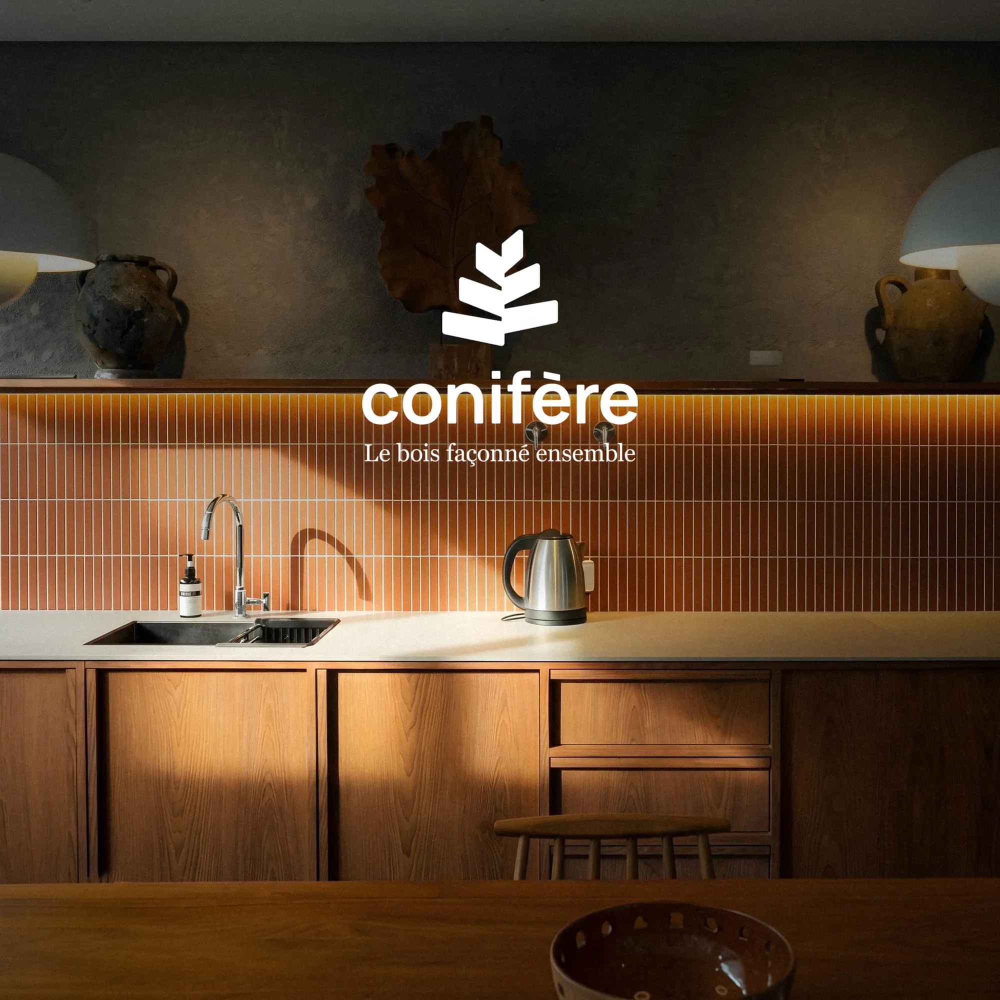
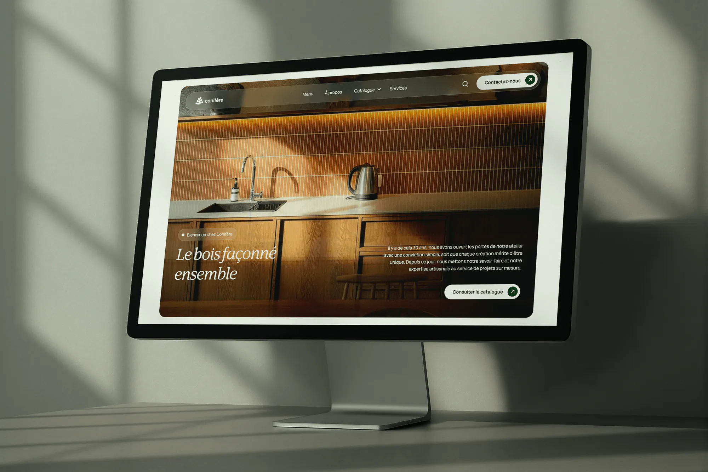
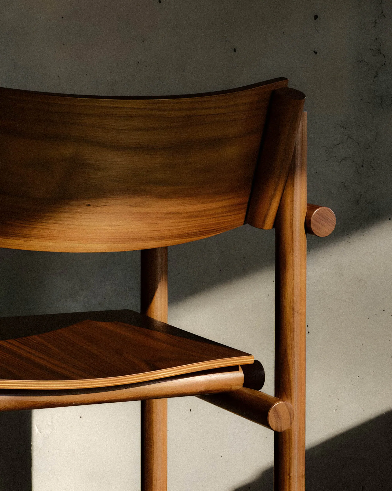
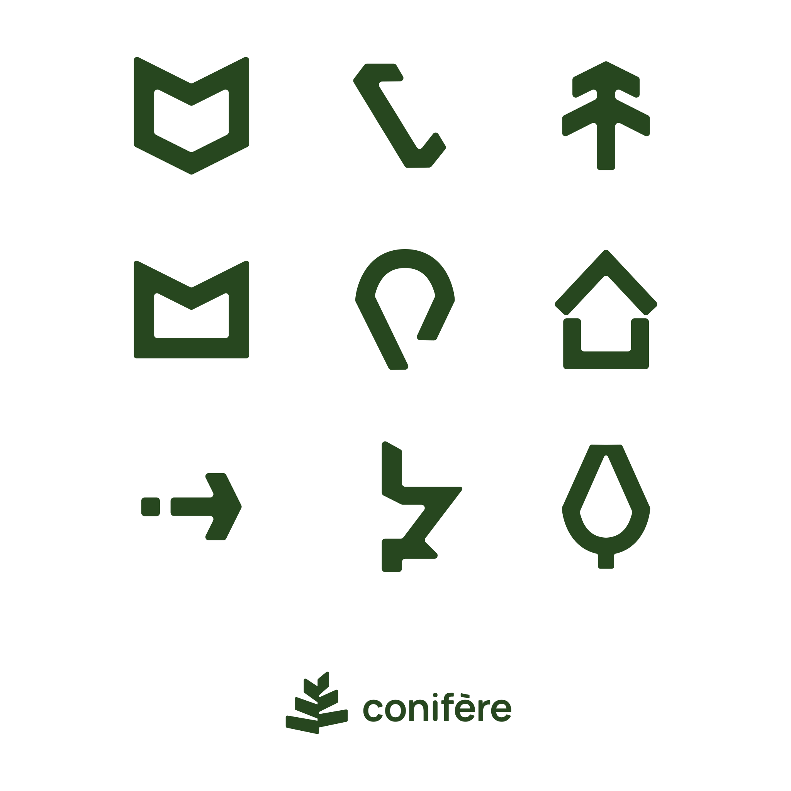
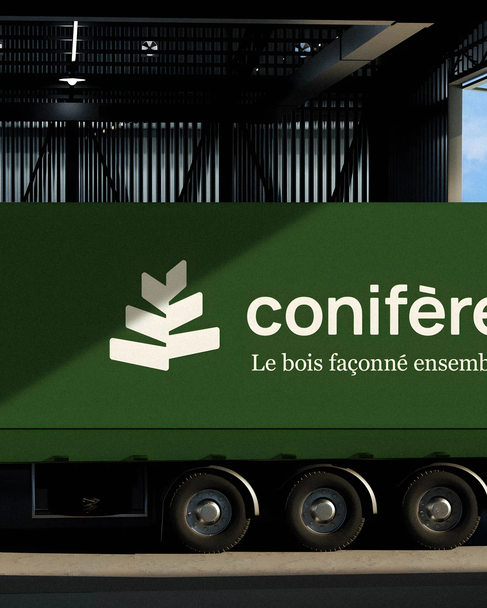
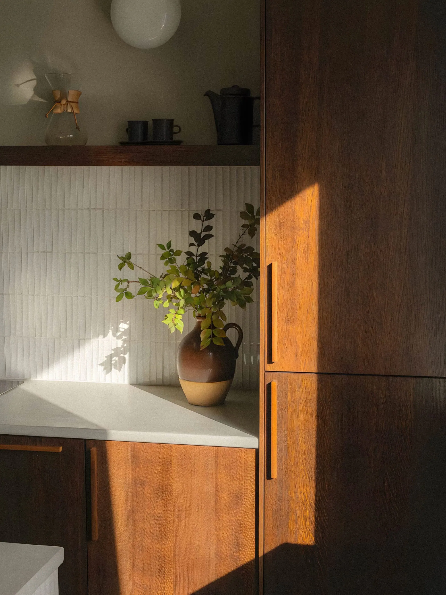
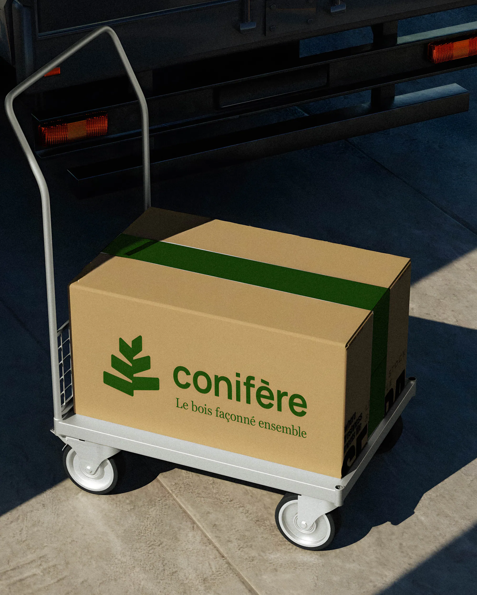
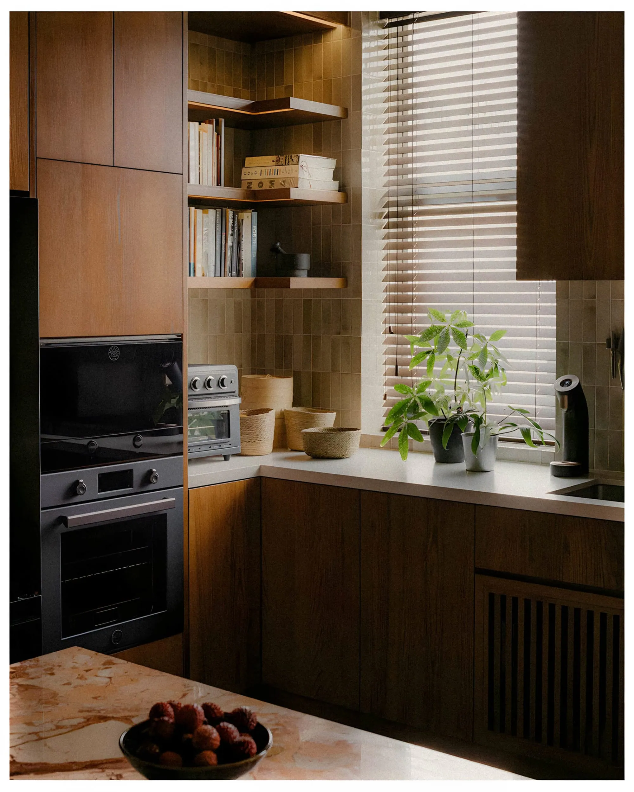

Image de marque
Conifère fait de l'ébénisterie sur mesure, pour les particuliers comme pour les commerces. On a bâti une identité qui reflète ce métier : un système visuel chaleureux et solide, un logo inspiré du conifère, une signature simple, « Le bois façonné ensemble ». De l'enseigne au site, tout sent l'atelier et le travail bien fait.



L'entreprise fait du sur mesure pour le résidentiel, le commercial et le détail, avec une approche humaine et une finition soignée.




Offrir des solutions d'ébénisterie sur mesure, adaptées aux clients particuliers et commerciaux, pour créer des pièces qui leur ressemblent.
Travailler chaque espace pour qu'il dure, sans le faire pareil pour tout le monde.
L'entreprise fait du sur mesure pour le résidentiel, le commercial et le détail, avec une approche humaine et une finition soignée.